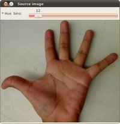

Back Projection
Goal
In this tutorial you will learn:
- What is Back Projection and why it is useful
- How to use the OpenCV function cv::calcBackProject to calculate Back Projection
- How to mix different channels of an image by using the OpenCV function cv::mixChannels
Theory
What is Back Projection?
- Back Projection is a way of recording how well the pixels of a given image fit the distribution of pixels in a histogram model.
- To make it simpler: For Back Projection, you calculate the histogram model of a feature and then use it to find this feature in an image.
- Application example: If you have a histogram of flesh color (say, a Hue-Saturation histogram ), then you can use it to find flesh color areas in an image:
How does it work?
We explain this by using the skin example:
Let’s say you have gotten a skin histogram (Hue-Saturation) based on the image below. The histogram besides is going to be our model histogram (which we know represents a sample of skin tonality). You applied some mask to capture only the histogram of the skin area:


Now, let’s imagine that you get another hand image (Test Image) like the one below: (with its respective histogram):


What we want to do is to use our model histogram (that we know represents a skin tonality) to detect skin areas in our Test Image. Here are the steps
In each pixel of our Test Image (i.e. \(p(i,j)\)), collect the data and find the correspondent bin location for that pixel (i.e. \(( h_{i,j}, s_{i,j} )\)).
Lookup the model histogram in the correspondent bin - \(( h_{i,j}, s_{i,j} )\) - and read the bin value.
Store this bin value in a new image (BackProjection). Also, you may consider to normalize the model histogram first, so the output for the Test Image can be visible for you.
Applying the steps above, we get the following BackProjection image for our Test Image:

In terms of statistics, the values stored in BackProjection represent the probability that a pixel in Test Image belongs to a skin area, based on the model histogram that we use. For instance in our Test image, the brighter areas are more probable to be skin area (as they actually are), whereas the darker areas have less probability (notice that these “dark” areas belong to surfaces that have some shadow on it, which in turns affects the detection).
Code
What does this program do?
- Loads an image
- Convert the original to HSV format and separate only Hue channel to be used for the Histogram (using the OpenCV function cv::mixChannels)
- Let the user to enter the number of bins to be used in the calculation of the histogram.
- Calculate the histogram (and update it if the bins change) and the backprojection of the same image.
- Display the backprojection and the histogram in windows.
Downloadable code :
- Click here for the basic version (explained in this tutorial).
- For stuff slightly fancier (using H-S histograms and floodFill to define a mask for the skin area) you can check the improved demo
- …or you can always check out the classical camshiftdemo in samples.
Code at glance:
#include "opencv2/imgproc.hpp" #include "opencv2/imgcodecs.hpp" #include "opencv2/highgui.hpp" #include <iostream> using namespace cv; using namespace std; Mat src; Mat hsv; Mat hue; int bins = 25; void Hist_and_Backproj(int, void* ); int main( int, char** argv ) { src = imread( argv[1], IMREAD_COLOR ); if( src.empty() ) { cout<<"Usage: ./calcBackProject_Demo1 <path_to_image>"<<endl; return -1; } cvtColor( src, hsv, COLOR_BGR2HSV ); hue.create( hsv.size(), hsv.depth() ); int ch[] = { 0, 0 }; mixChannels( &hsv, 1, &hue, 1, ch, 1 ); const char* window_image = "Source image"; namedWindow( window_image, WINDOW_AUTOSIZE ); createTrackbar("* Hue bins: ", window_image, &bins, 180, Hist_and_Backproj ); Hist_and_Backproj(0, 0); imshow( window_image, src ); waitKey(0); return 0; } void Hist_and_Backproj(int, void* ) { MatND hist; int histSize = MAX( bins, 2 ); float hue_range[] = { 0, 180 }; const float* ranges = { hue_range }; calcHist( &hue, 1, 0, Mat(), hist, 1, &histSize, &ranges, true, false ); normalize( hist, hist, 0, 255, NORM_MINMAX, -1, Mat() ); MatND backproj; calcBackProject( &hue, 1, 0, hist, backproj, &ranges, 1, true ); imshow( "BackProj", backproj ); int w = 400; int h = 400; int bin_w = cvRound( (double) w / histSize ); Mat histImg = Mat::zeros( w, h, CV_8UC3 ); for( int i = 0; i < bins; i ++ ) { rectangle( histImg, Point( i*bin_w, h ), Point( (i+1)*bin_w, h - cvRound( hist.at<float>(i)*h/255.0 ) ), Scalar( 0, 0, 255 ), -1 ); } imshow( "Histogram", histImg ); }
Explanation
Declare the matrices to store our images and initialize the number of bins to be used by our histogram:
Mat src; Mat hsv; Mat hue; int bins = 25;
Read the input image and transform it to HSV format:
src = imread( argv[1], 1 ); cvtColor( src, hsv, COLOR_BGR2HSV );
For this tutorial, we will use only the Hue value for our 1-D histogram (check out the fancier code in the links above if you want to use the more standard H-S histogram, which yields better results):
hue.create( hsv.size(), hsv.depth() ); int ch[] = { 0, 0 }; mixChannels( &hsv, 1, &hue, 1, ch, 1 );
as you see, we use the function cv::mixChannels to get only the channel 0 (Hue) from the hsv image. It gets the following parameters:
- &hsv: The source array from which the channels will be copied
- 1: The number of source arrays
- &hue: The destination array of the copied channels
- 1: The number of destination arrays
- ch[] = {0,0}: The array of index pairs indicating how the channels are copied. In this case, the Hue(0) channel of &hsv is being copied to the 0 channel of &hue (1-channel)
- 1: Number of index pairs
Create a Trackbar for the user to enter the bin values. Any change on the Trackbar means a call to the Hist_and_Backproj callback function.
char* window_image = "Source image"; namedWindow( window_image, WINDOW_AUTOSIZE ); createTrackbar("* Hue bins: ", window_image, &bins, 180, Hist_and_Backproj ); Hist_and_Backproj(0, 0);
Show the image and wait for the user to exit the program:
imshow( window_image, src ); waitKey(0); return 0;
Hist_and_Backproj function: Initialize the arguments needed for cv::calcHist. The number of bins comes from the Trackbar:
void Hist_and_Backproj(int, void* ) { MatND hist; int histSize = MAX( bins, 2 ); float hue_range[] = { 0, 180 }; const float* ranges = { hue_range };
Calculate the Histogram and normalize it to the range \([0,255]\)
calcHist( &hue, 1, 0, Mat(), hist, 1, &histSize, &ranges, true, false ); normalize( hist, hist, 0, 255, NORM_MINMAX, -1, Mat() );
Get the Backprojection of the same image by calling the function cv::calcBackProject
MatND backproj; calcBackProject( &hue, 1, 0, hist, backproj, &ranges, 1, true );
all the arguments are known (the same as used to calculate the histogram), only we add the backproj matrix, which will store the backprojection of the source image (&hue)
Display backproj:
imshow( "BackProj", backproj );
Draw the 1-D Hue histogram of the image:
int w = 400; int h = 400; int bin_w = cvRound( (double) w / histSize ); Mat histImg = Mat::zeros( w, h, CV_8UC3 ); for( int i = 0; i < bins; i ++ ) { rectangle( histImg, Point( i*bin_w, h ), Point( (i+1)*bin_w, h - cvRound( hist.at<float>(i)*h/255.0 ) ), Scalar( 0, 0, 255 ), -1 ); } imshow( "Histogram", histImg );
Results
Here are the output by using a sample image ( guess what? Another hand ). You can play with the bin values and you will observe how it affects the results:
